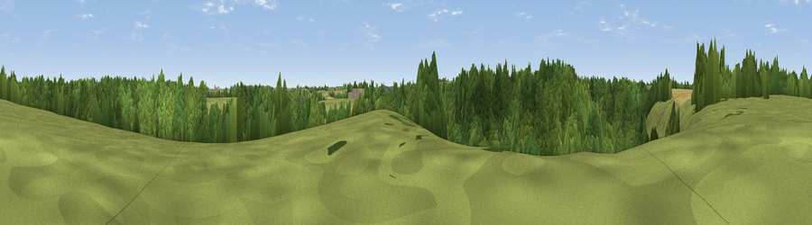

Truckle Hill
#43709 in England · top 90% of its area beats it · near Castle CombeThe view, rendered

A 360° render of this exact spot computed from the terrain model, tree cover and land cover — summer colours, afternoon light, calibrated against photographs of famous viewpoints. Real trees, hedges and buildings will differ in detail.
The panorama
Grey silhouette: terrain skyline in each direction (720 bearings, Earth curvature and refraction included). Dashed green: skyline with trees (+15 m) and buildings (+8 m) as obstacles. Blue strip: how far the ground is visible on each bearing.
Where the view opens
Wedge length = distance to the farthest visible ground on that bearing (vegetation-aware). Rings at 10, 25 and 50 km.
What fills the view
65% woodland · 26% grassland · 8% cropland
Angular shares of the visible panorama (visual magnitude), not map area. Landscape diversity 0.36 (0–1 Shannon).
Key numbers
More beautiful places nearby
The staircase of upgrades: each row has a higher view potential than everything closer. Driving times are estimates from straight-line distance, calibrated against real road routing — check an actual route before setting out.
| Place | Direction | Drive | Score |
|---|---|---|---|
| Viewpoint near Castle Combe | N · 1 km | ~3 min | 26.8 |
| Viewpoint near Castle Combe | NE · 1 km | ~4 min | 39.3 |
| Viewpoint near North Wraxall | S · 3 km | ~6 min | 44.8 |
| Lan Hill | ESE · 5 km | ~10 min | 48.5 |
| Viewpoint near Ashley | SSW · 7 km | ~15 min | 52.7 |
| Viewpoint near Marshfield | WSW · 9 km | ~17 min | 56.6 |
| Viewpoint near Hinton | WNW · 9 km | ~17 min | 65.9 |
| Viewpoint near Horton | NW · 12 km | ~22 min | 66.9 |
51.48047, -2.23791 · source: osm peak · position refined by local search. Computed location — check access rights before visiting.